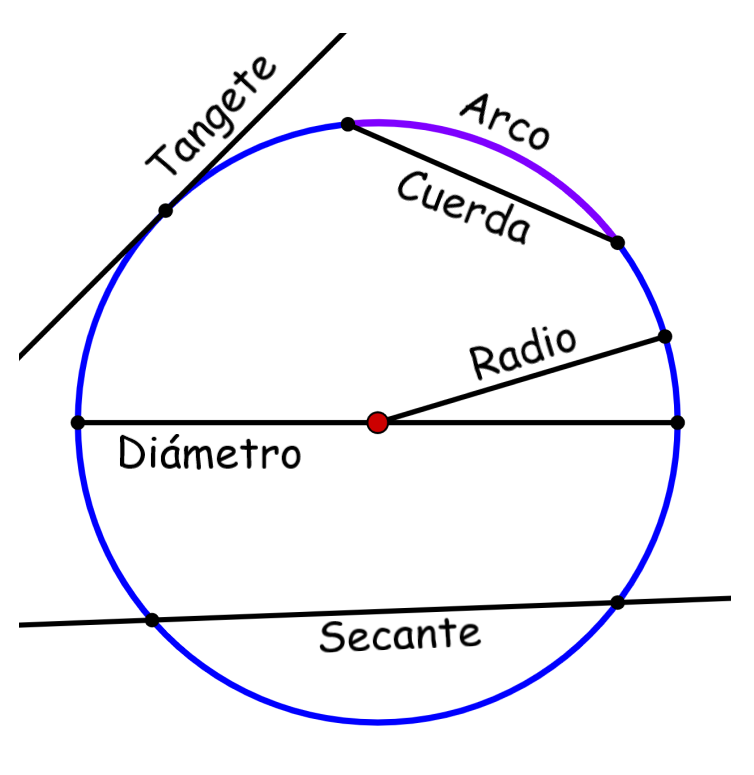

LA PARABOLA
Introducción.
Bienvenidos, La parábola es una de las curvas más conocidas y estudiadas en el ámbito de las matemáticas. Su forma característica y su amplia presencia en diversas áreas del conocimiento la convierten en un objeto de gran interés y utilidad. Desde la antigua Grecia hasta nuestros días, las parábolas han desempeñado un papel fundamental en el desarrollo de teorías y aplicaciones prácticas en campos como la física, la ingeniería, la arquitectura y la economía, entre otros. En esta introducción, exploraremos los fundamentos de la parábola, sus propiedades y su importancia en el mundo real, así como su conexión con las ecuaciones cuadráticas. Descubriremos cómo esta curva ha cautivado la imaginación de científicos y matemáticos a lo largo de los siglos, y cómo sigue siendo una herramienta invaluable en el análisis y la modelización de fenómenos naturales y humanos. Prepárate para adentrarte en el fascinante mundo de las parábolas y descubrir su influencia en nuestra comprensión del universo que nos rodea.
Sobre la Parabola.
¿Qué es la Parabola?
Una parábola es una curva en el plano que tiene una forma característica de apertura, similar a la de un arco. Matemáticamente, se define como el conjunto de puntos equidistantes de un punto fijo llamado foco y una recta fija llamada directriz. La parábola es una de las curvas cónicas, junto con la elipse y la hipérbola.
Las parábolas tienen propiedades geométricas interesantes. Por ejemplo, cualquier rayo que incida sobre una parábola desde el foco se reflejará de manera que el ángulo de incidencia sea igual al ángulo de reflexión con respecto a la tangente en ese punto de la parábola. Esta propiedad se utiliza en aplicaciones prácticas, como en los espejos parabólicos utilizados en los telescopios y en los reflectores de las antenas parabólicas.
Elementos básicos
En la imagen expuesta arriba se pueden ver todos los elementos que vamos a nombrar a continuación:
- Centro: punto central que está a la misma distancia de todos los puntos pertenecientes a la circunferencia.
- Radio: pedazo de recta que une el centro con cualquier punto perteneciente a la circunferencia.
- Cuerda: pedazo de recta que une dos puntos cualquiera de una circunferencia.
- Diámetro: mayor cuerda que une dos puntos de una circunferencia. Hay infinitos diámetros y todos pasan por el centro de la circunferencia.
- Recta secante: recta que corta dos puntos cualesquiera de una circunferencia.
- Recta tangente: recta que toca a la circunferencia en un solo punto y es perpendicular a un radio.
Para más información, busque. Parabolas en Wikipedia.
Conclusión
las parábolas son una forma poderosa y versátil de representar una variedad de fenómenos y conceptos en matemáticas y otras disciplinas. Su forma característica y su relación con las ecuaciones cuadráticas las convierten en una herramienta invaluable para modelar y analizar una amplia gama de situaciones del mundo real. Las parábolas tienen aplicaciones en física, ingeniería, economía y muchos otros campos, permitiéndonos comprender y predecir comportamientos, identificar puntos críticos y optimizar soluciones. Además, su belleza y elegancia matemática han fascinado a los estudiosos durante siglos, lo que demuestra la profunda conexión entre las matemáticas y la naturaleza. En resumen, las parábolas representan una de las formas más poderosas y fascinantes de expresión matemática, que continúa desempeñando un papel fundamental en nuestra comprensión del mundo que nos rodea.